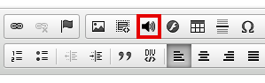

CKEditor webguneetarako testu-editore librea, bere plugin ekosistema eta 'HTML5 audio' pluginaren kasuaren azterketa
Asier Iturralde Sarasola @aldatsa
Software eta Teknologia Librearen III. Euskal Mintegia
2016-11-17
Zer da CKEditor?

FCKeditor-etik CKEditor-era
- Lehen bertsioa 2003an argitaratu zuten FCKeditor izenarekin.
- Izena sortzailearen izenetik dator: Frederico Caldeira Knabben
- Baina ingelesezko FUCK hitzaren antz handia du
- Izen aldaketa: FCKeditor -> CKEditor

Lizentzia

Garapen eredua
- Hasieratik hasieratik software librea
- CKEditor 3tik aurrera Open Development Effort
- CKEditor-ek hartu beharreko norabidean eta ezaugarri berrien diseinuan komunitatearen iritziak kontutan hartzeko saiakera
- Baina ezaugarri batzuk sekretuan garatu zituzten konpetentziaren beldur
Garapen eredua (II)
- CKEditor 5en garapena erabat publikoa da
- Produktuaren ezaugarrien diseinua Github-eko proiektu bateko issue-tan egindako eztabaida publikoen bidez
- Guztia eztabaidagai publikoki: erabiltzaile interfaze eta erabiltzaile esperientzia, garapeneko erabaki teknikoak (Adb: ES6 erabiltzea), ...
- Erabaki horietan oinarrituta garatzen ari diren CKEditor 5 berriaren kodea ere publiko
Negozio eredua
Beren produktu nagusia doan banatzen duten software librea den arren erlazionaturiko zerbitzuak eskaintzen dituzte diru truk.
- CKEditor Premium Jabedun lizentzia erabiltzeko aukera eta arreta teknikoa.
- CKFinder Fitxategien kudeaketarako softwarearen bertsio osoa ordainpekoa eta jabeduna. Doako bertsioa mugatua baina erabilgarria. Hirugarrenek garatutako alternatiba libreak badira, adibidez, elFinder.
- Formazioa Bezeroaren beharretara egokitutako formazio saioak.
- Garapen pertsonalizatuak Pluginen garapena, pertsonalizazioa, ezaugarri berrien garapena...
- Ikuskaritza Proiektuak ikuskatu, gomendioak egin...
- Arreta teknikoa Zuzeneko harremana garatzaileekin norbere arazo konkretuak konpontzeko
Zer da CKEditor-eko plugin bat
- Pluginek CKEditor-ri funtzionalitate gehigarriak gehitzeko aukera ematen dute, adibidez, botoi berriak gehituz.
- Pluginei esker web garapenari buruzko ezagutzarik ez duten erabiltzaileek jatorrizko funtzionalitateaz gain beren beharretara egokitutako eduki konplexuak sor ditzakete.
Pluginetan oinarritutako arkitektura
- CKEditor-en oinarrian core edo nukleoa dago. Bere kasa ez du ezer egiten, pluginei JavaScript-eko API bat eskaintzen die.
- Funtzionalitate guztiak pluginen bidez garatuta daude.
Plugin gordailua
- http://ckeditor.com/addons/plugins/
- Une honetan 489 plugin daude
- Doako pluginak eta ordainpekoak
- CKEditor-en taldeak garatuak eta komunitateak sortuak
CKBuilder
- Norbere beharretara egokitutako CKEditor editorea sortu eta deskargatzeko tresna: http://ckeditor.com/builder
- 3 abiapuntu: oinarrizkoa, estandarra eta osoa
- Pluginak kendu eta gehitzeko aukera
- Pluginen mendekotasunak automatikoki kudeatzen ditu
Hilabeteko pluginak
-
Urtarrila: AutoSave http://ckeditor.com/addon/autosave
-
Otsaila: Leaflet Maps http://ckeditor.com/addon/leaflet
-
Martxoa: Quicktable http://ckeditor.com/addon/quicktable
-
Apirila: Word Count & Char Count http://ckeditor.com/addon/wordcount
-
Maiatza: LoopIndex Track Changes http://ckeditor.com/addon/lite
-
Ekaina: Accessibility Checker http://ckeditor.com/addon/a11ychecker
-
Uztaila: Bootstrap Glyphicon http://ckeditor.com/addon/glyphicons
-
Abuztua: HTML5 audio http://ckeditor.com/addon/html5audio
-
Iraila: Code Editor http://ckeditor.com/addon/pbckcode
-
Urria: Chart http://ckeditor.com/addon/chart
iametzak garatutako html5 audio plugina
- Webguneetan modu erraz batean HTML5 audioak txertatzeko aukera ematen du
- http://ckeditor.com/addon/html5audio
Historia
- ARGIA.euseko lankideek webgunean lizentzia libredun irratien audioak jarri nahi zituzten
- CKEditor-en funtzionalitate hori ematen zuen pluginik ez zegoen
- HTMLa zuzenean editatzea ez da praktikoa
<audio controls="controls" src="adibidea.mp3">
Nola erabili?
-
Kurtsorea audioa txertatu nahi den lekuan kokatu eta CKEditor-en tresna barrako bozgorailu itxurako botoian klikatu...

-
eta leiho bat irekitzen da...
bertan audioaren URLa sartu eta dagoeneko zerbitzarian dagoen audio bat hautatu daiteke.
Audio erreproduzitzailea nola lerrokatu ere hautatu daiteke.
Nola erabili? (II)
-
Kargatu fitxa erabiliz audio-fitxategi berriak kargatu daitezke zerbitzarira.
-
Erabiltzaileen eskaerari erantzunez audioa automatikoki erreproduzitzeko aukera ere gehitu genuen.
Nola erabili? (III)
-
Erdian lerrokatutako erreproduzitzailearen adibidea.
-
Ezkerrean edo eskuinean ere lerrokatu daiteke.
Harrera
- Ikus dezakezuenez oso plugin sinplea da.
- Eskaera zuen funtzionalitate hutsune bat betetzen duenez harrera ona izan du.
- 5.000 deskargatik gora hilabete gutxian.
- Erabiltzaileek beren hizkuntzetara itzuli dute.
- CKEditor-ek abuztuko hilabeteko plugin bezala nabarmendu zuen!
Zin dagit ez geniela ordaindu (I)
.@iametza’s Simple HTML5 audio plugin for @ckeditor should be a model for all CKEditor plugins. Clean & easy. https://t.co/RNu3bLVFTe
— Chris Garaffa (@cmg) 2016(e)ko irailak 16
Zin dagit ez geniela ordaindu (II)
@ckeditor @aldatsa Very vell done! It's really one of the best documented plugins in the repository!
— SmartCore Studio (@smartcorestudio) 2016(e)ko abuztuak 2
Lizentzia
- html5 audio plugina GNU GPLv3 lizentzia duen software librea da
- Kodea github-en: https://github.com/iametza/ckeditor-html5-audio
Itzulpenak
- Hasiera batean euskaraz, gazteleraz eta ingelesez argitaratu genuen
- Erabiltzaileek hainbat itzulpen egin dituzte:
- Alemana: Mischa Sameli
- Errusiera: smartcorestudio (argitaratutako egunean bertan)
- Frantsesa: Simon Georget
- Ukrainiera: Sensetivity
html5 audio pluginaren negozio eredua
- Argitaratzean erabaki beharra: doan edo ordainduta?
- CKEditor asko erabiltzen dugu, doan banatuta komunitateari ekarpena
- Marketing eta ikuspuntu komertzialetik irabazia: sare sozialetan zabalkundea, aurkezpenak, bezeroei CKEditor kontrolatzen dugula eta plugin arrakastatsu bat sortu dugula erakusteko aukera
Komunitatearekin harremana
- Mundu mailan erabiliko den zerbait argitaratzen nuen lehen aldia
- Momentuz ez dugu komunitatearen kode ekarpenik jaso
- Itzulpenak bidaltzeko bi aukera: pluginaren orrian iruzkina idatzita edo pull request-a github-en. Itzulpen guztiak github-etik jaso ditugu
- Erabiltzaileek arazoen berri eman digute Github eta CKEditor-eko webgunea erabiliz. Gehienen arazoak konpondu ditugu baina kasu batzuetan ezin lagundu. CKEditor-en inguruan mundu bat dago: CMSekin integrazioa, garapeneko framework-ekin integrazioa...
Abuztuko hilabeteko plugina
Check out our CKEditor Add-On of August - Simple HTML5 audio by @aldatsa https://t.co/b4npbs54Sm pic.twitter.com/ozSqK3mFTl
— CKEditor (@ckeditor) 2016(e)ko abuztuak 1
Abuztuko hilabeteko plugina (II)
Ilusio berezia egin zidan CKEditor-ek euskarazko txio bat bertxiotzeak
Gure HTML5 audio plugina @ckeditoren abuztuko hilabeteko plugin bezala nabarmendu dute https://t.co/9ME2D4Yn28 pic.twitter.com/6u1lqJqRRW
— iametza (@iametza) 2016(e)ko abuztuak 2
Abuztuko hilabeteko plugina (III)
Pluginen orrian nabarmenduta agertu zen hilabetez
Horixe zen guztia. Galderarik?
Mila esker!
-
Aurkezpena:
-
Aurkezpenaren iturburu-kodea (GNU GPLv3):
-
Aurkezpena garatzeko Reveal.js erabili dut:
http://lab.hakim.se/reveal-js/
MIT lizentzia duen software librea da